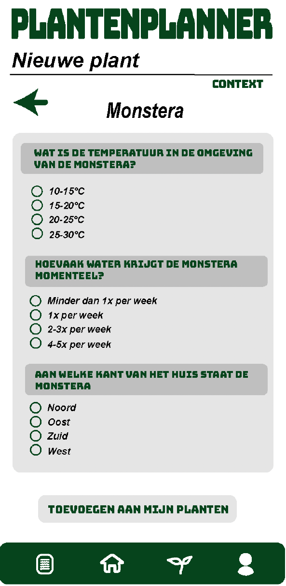
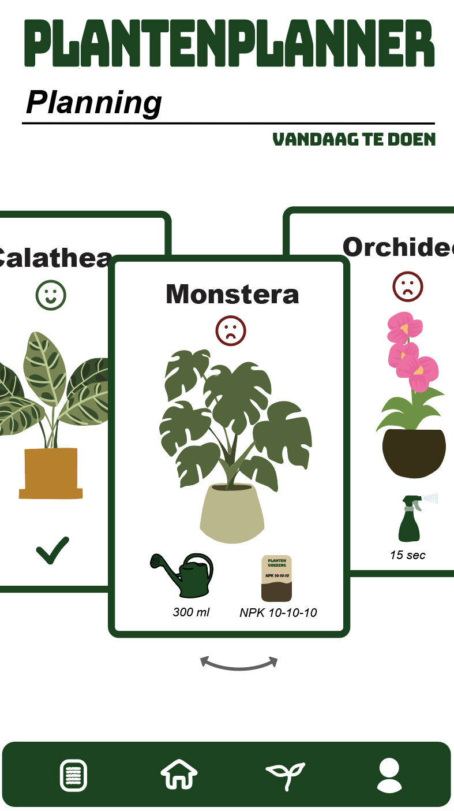
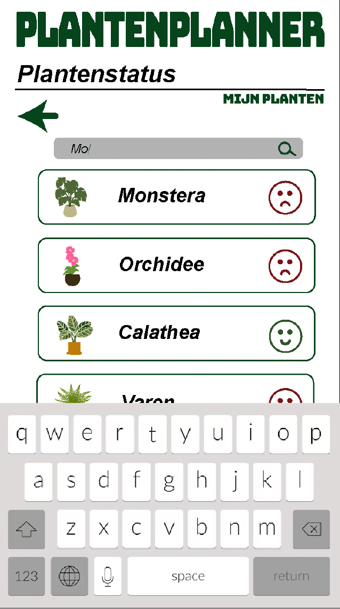

Project overzicht
Het project Planten Planner richt zich op het ontwikkelen van een gebruiksvriendelijke app die plantenverzorging zo eenvoudig mogelijk maakt. Veel mensen vinden het lastig om hun planten op de juiste manier te onderhouden, en missen vaak overzicht in wanneer en hoe ze hun planten moeten verzorgen.
Planten Planner biedt hiervoor een slimme oplossing door middel van duidelijke herinneringen en praktische adviezen. Gebruikers krijgen op een overzichtelijke manier inzicht in de specifieke verzorgingsbehoeften van hun planten, zoals watergift, bemesting en andere onderhoudstaken.
Met Planten Planner maken we het eenvoudig om planten gezond te houden. Een slimme en gestructureerde aanpak voor iedereen die zijn planten gezond wil houden.
Doel
Gebruikers helpen hun planten beter te verzorgen door overzicht en structuur.
Focus
UX research, datavisualisatie en gebruiksvriendelijke interface.
Rol
UX/UI designer – concept, interface ontwerp en visuele uitwerking.
Schermen



Resultaat
Een overzichtelijke en intuïtieve app waarin gebruikers snel inzicht krijgen in hun planten en onderhoud.
Download volledige case study